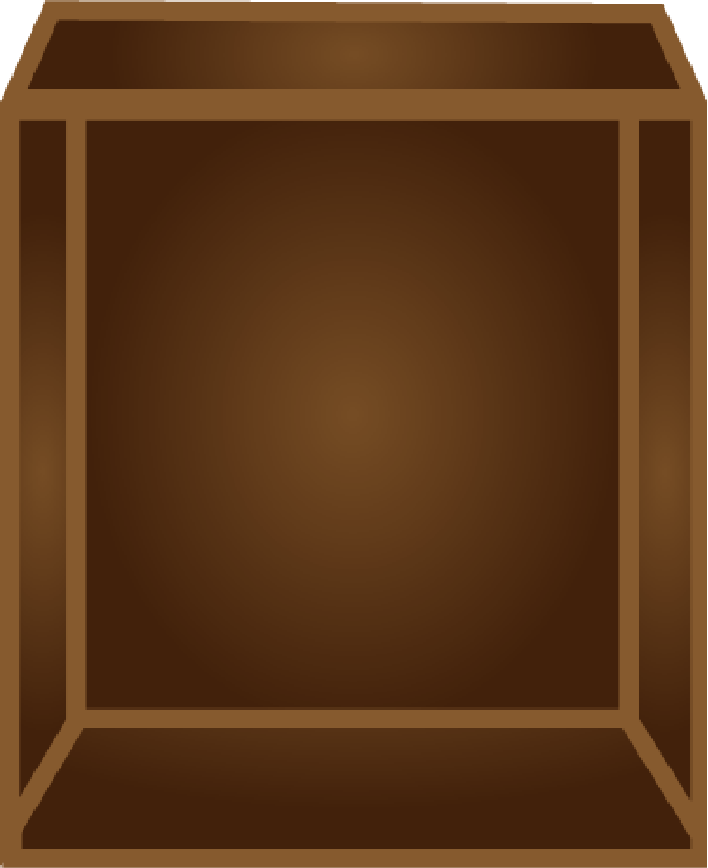
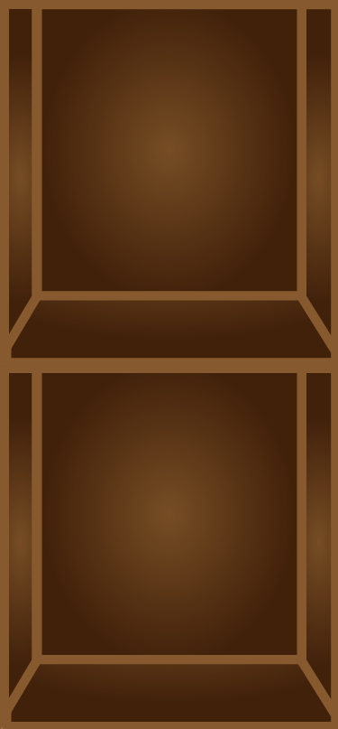

Your local whole food store, with a focus on ethical products
Supporting local
We are a local supermarket based in Oud-West Amsterdam. We are the first store that is plastic free. We co-operate with local non-processed food stores
Food counter
When you visit our store you might find our food counter. Where you can order our fresh delicious vegan foods. We highly avoid processed food and we only offer food that’s made with wholesome and nutritious.
